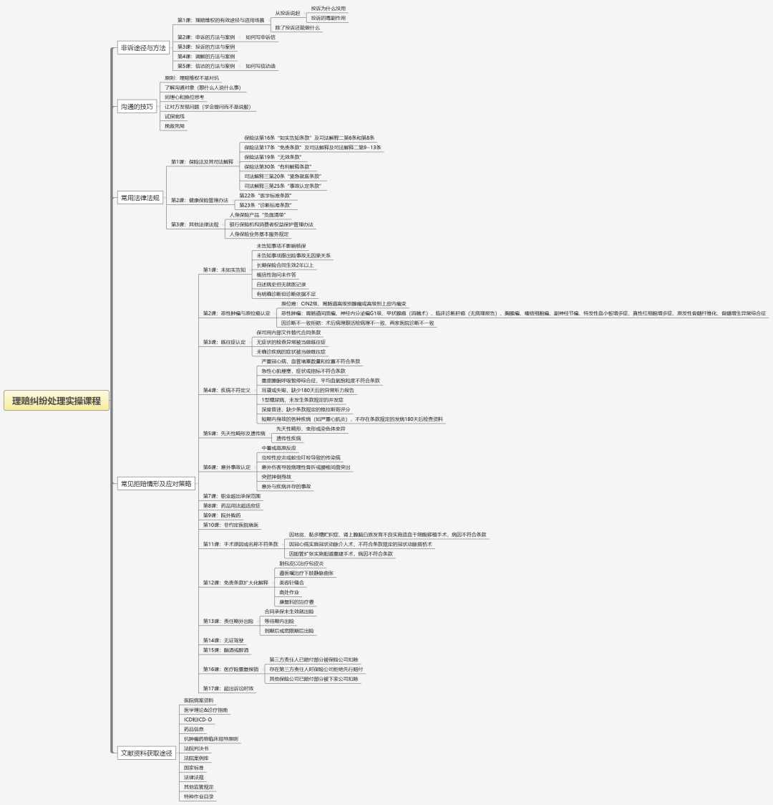

告别内卷！理赔维权实操课，带保险同仁解锁获客+增收新赛道
做保险的你，是不是早已陷入迷茫？佣金腰斩、保费高企导致客户流失、理财险吸引力大减，保单难推；日常被内卷裹挟，获客艰难、业绩惨淡，甚至开始怀疑自己选错了行业？有没有想过如何突破目前的职业困境？
我和郑道武老师自2018年深耕保险拒赔纠纷，8年来处理了200多起各类拒赔纠纷，绝大多数通过非诉方式帮客户与保司达成共识、拿回应得赔款。此前我们在公众号分享的典型案件，收到众多同仁留言，大家迫切希望我们开课，传授非诉处理理赔纠纷技巧，帮自己跳出困境。
好消息来了：年后我们将正式推出非诉处理理赔纠纷实操课程，专门针对保险人痛点，手把手教大家解锁新技能、抢占新赛道！
这两年保险赛道早已今非昔比，保行合一政策落地后佣金大幅缩水，重疾险保费攀升、理财险收益下行，加剧了展业难度，不少同仁深陷“获客难、签单难、增收难”的死循环。
但困境不是绝境，协助处理拒赔纠纷就是当下行业最具潜力的“新蓝海”。市面上有大量保险客户理赔被拒、亟需专业帮助，而我们懂产品、懂条款，转型有着天然优势；且这个赛道不用拼人脉、卷低价，新人老同仁掌握技巧都能上手。
会协助处理拒赔纠纷更是“获客神器”。客户拒买保险，根源是怕“买易赔难”、质疑我们的专业度。若我们转变思路，分享真实维权案例，就能打破“只会推销”的刻板印象，建立信任后，客户主动找你投保、推荐亲友，获客签单水到渠成。
更诱人的是，处理拒赔纠纷收入比卖保险更可观稳妥，前期零投入，客户获赔后按理赔金额15%-20%收取服务费：10万拒赔案可赚1.5-2万元，顶十几份普通保单佣金，多劳多得靠专业赚钱。
很多同仁担心不懂法律、不会交涉做不好？别慌！这门课不教空洞理论，只传实操干货，我们会把8年经验、200多起案件的处理经验和技巧倾囊相授。课程涵盖拒赔场景拆解、交涉话术、维权流程等核心内容，零基础新人、想拓业的老同仁都能快速入门、学以致用。
当下保险行业已进入“专业制胜、服务为王”的阶段，固守传统赛道只会被淘汰。与其耗尽全力颗粒无收，不如跳出舒适圈学新技能。这门课就是你的破局利器，不用深厚法律功底、强大人脉，愿意学就能实现获客、收入双突破。跟着我们跳出内卷，靠协助理赔纠纷逆风翻盘、轻松增收！
以下是本次理赔纠纷处理培训的初步课程安排：

课程分成四部分：
模块一：非诉的主要方法：
这部分是传授非诉处理理赔纠纷的手段，手把手教你如何申诉、投诉、调解、信访的全流程实操技能，学会写申诉信，写信访函，提升专业的水平和成功率。
模块二：沟通的技巧
包括书面沟通和电话沟通的技巧。理赔纠纷的本质是 “信任与信息的冲突”，本模块帮你建立专业、共情的沟通能力，化解对立情绪，更有效地与保司进行沟通。
模块三：常用法律法规
法律是理赔纠纷的 “底层逻辑”，本模块帮你把法条变成可直接应用的实操工具，通过具体的实战案例教会你怎怎么应用。
模块四：常见拒赔情形及应对策略
这是课程的 “实战核心”，我们会拆解17 类高频拒赔场景，教你精准应对每一类拒赔理由。
模块五：文献资料获取途径
理赔纠纷的处理依赖 “专业证据”，本模块教你高效获取关键资料的渠道与方法。
各位如果有希望学习，而课程大纲还没有的内容，可以在评论区提出建议和意见，我们会进行调整。期待本次培训尽快与你相见。
——End——
我是任巍巍，
中山大学工商管理硕士，
大家可以信任的11年资深保险顾问。
帮大家解决怎么买保险问题，
帮大家解决保险拒赔问题。
有求助或者交流可以扫码加任老师的微信

本文由 ShawnCH（何智翔）轉發，透過微信聊天記錄自動提取並整理。 原文連結：https://mp.weixin.qq.com/s?__biz=MzUxNzM5MzQwNg==&mid=2247485066&idx=1&sn=3acb7859532c81ed62372158c1e7c482&chksm=f828b9e8d720f62184f55fd79bdd27790eccb88ac07e23249092fbc16c2da6e241296ab4b28e&mpshare=1&scene=1&srcid=0204cnrClgQsNe3sPQIHMMTQ&sharer_shareinfo=293041cc3729cdeeb080246c3735e72d&sharer_shareinfo_first=293041cc3729cdeeb080246c3735e72d#rd